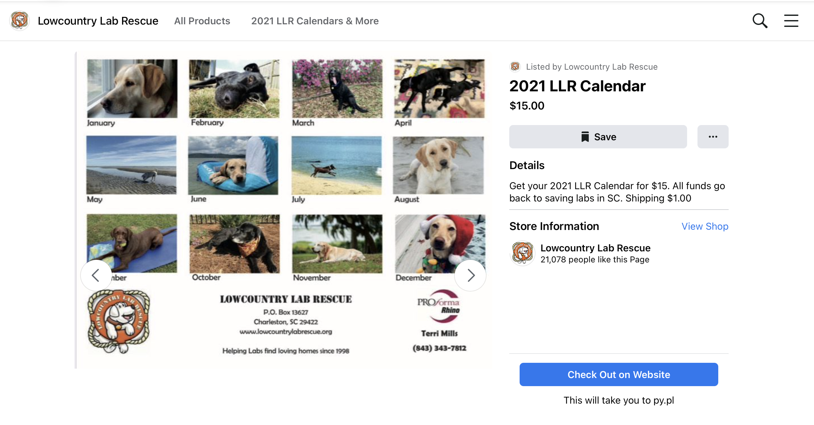

Research
Primary and Secondary Client Research
The Client
Lowcountry Lab Rescue rescues Labrador Retrievers from shelters throughout South Carolina that are in danger of being put to sleep for various reasons including something as simple as the dog is black in color. This includes everything from requiring medical care needed that is greater than a shelter can offer to just a lack of space at a shelter. We are the only Labrador breed specific rescue group in the entire state.
Primary Research
Lowcountry Lab Rescue keeps a website with information, branding and contact information.
In addition to their website Lowcountry Lab Rescue has a facebook page.

The Facebook page is also used to to sell merchandise to support the organization.
Lowcountry Lab Rescue Annual Calendar (2021 Edition)

Secondary Research
Things that have previously worked well for LLR and similar organizations
- Social Media
- Community Outreach Events
Areas of Improvement
- Physical advertising
- Most of LLR's outreach consists of either digital advertising through social media and through word of mouth
- Adding some advertsments or articles in a magazine or local newspapers may prove be benifitial.
- Raising awareness of what the animals are being rescued from
- Bringing attention to the benefits of having a dog